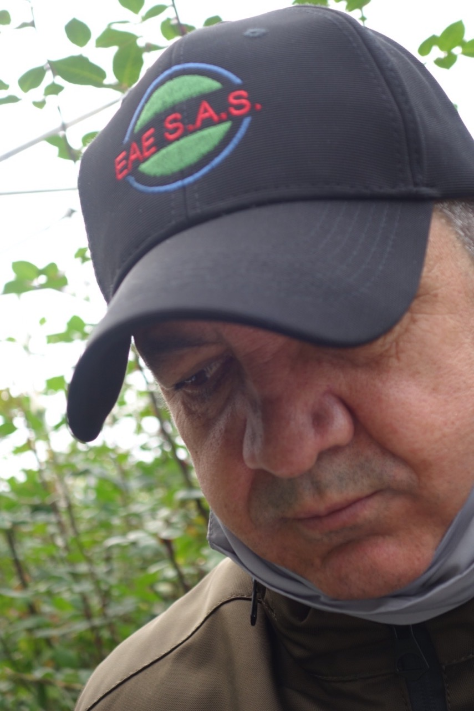
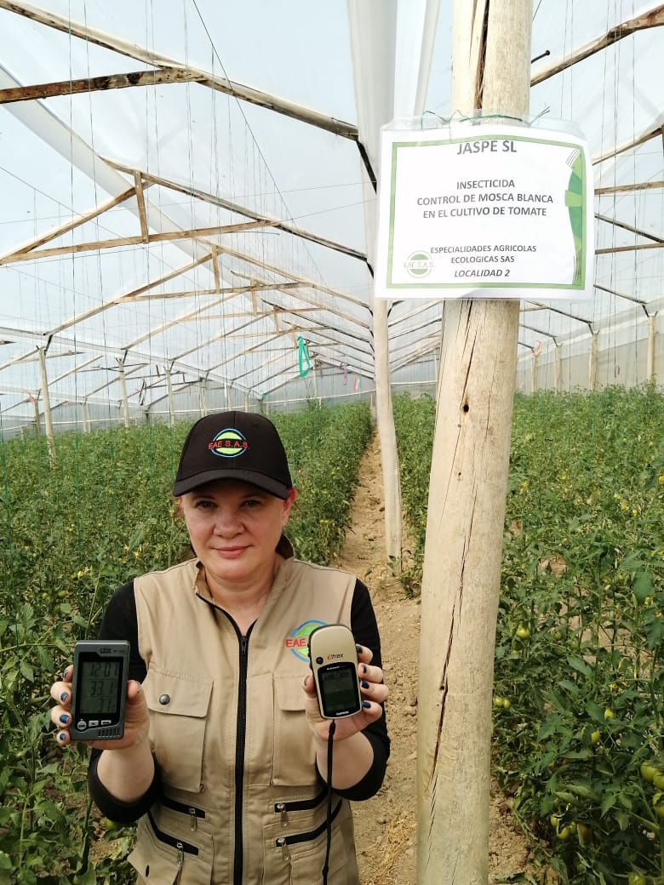
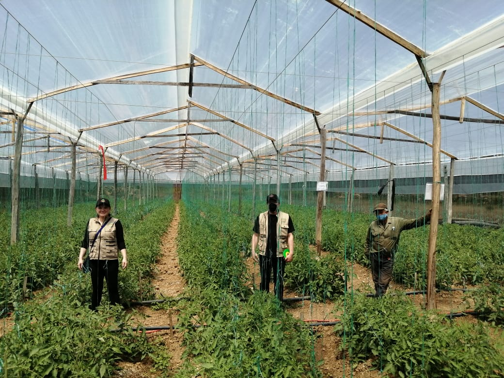

En Especialidades Agrícolas Ecológicas S.A.S. hemos reunido un grupo de consultores con experiencia en diversos ámbitos. Nuestro compromiso es responder ante desafíos complejos utilizando nuestro enfoque estratégico creativo y colaborativo.

Gabriel Garces
Ingeniero agrónomo con extensa experiencia de dirección en el sector empresarial del agro colombiano y latinoamericano. Grandes habilidades en relaciones interpersonales, conocimiento e interacciones con el sector y sus actores.

Ingeniera Quimica
Ingeniera Quimica MSC
Ambiental

Equipo de apoyo
Dos profesionales expertos en temas de Evaluación de Riesgo Ambiental con gran conocimiento y eficacia en la resolución de sus necesidades.
Un profesional experto en Riesgo Toxicológico.
Una red de más de 90 Profesionales Ingenieros Agrónomos, con conexión directa a EAE SAS nos brinda un conocimiento fiable continuo en campo de los diferentes retos técnicos y del mercado.